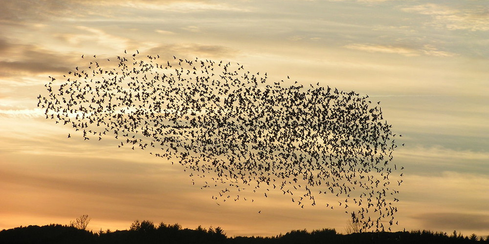
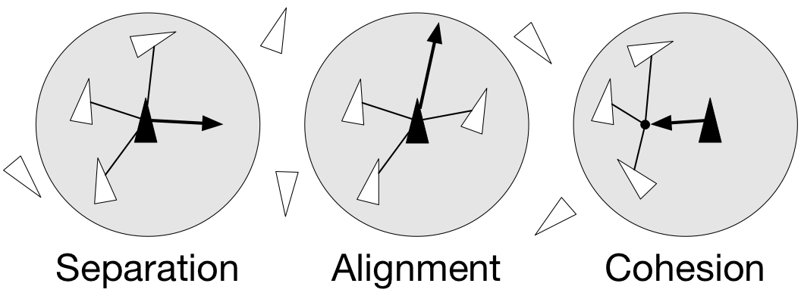

On this page
Credits: https://www.labri.fr/perso/nrougier/from-python-to-numpy/#id5
Boids Simulation Exercise
Spatial vectorization refers to a situation where elements share the same computation but are in interaction with only a subgroup of other elements. In some situations there is an added difficulty because the subgroup is dynamic and needs to be updated at each iteration. This the case, for example, in particle systems where particles interact mostly with local neighbours. This is also the case for "boids" that simulate flocking behaviors.
~ Flocking birds are an example of self-organization in biology. Image by Christoffer A Rasmussen, 2012:


Boids
Boids is an artificial life program, developed by Craig Reynolds in 1986, which simulates the flocking behaviour of birds. The name "boid" corresponds to a shortened version of "bird-oid object", which refers to a bird-like object.
As with most artificial life simulations, Boids is an example of emergent behavior; that is, the complexity of Boids arises from the interaction of individual agents (the boids, in this case) adhering to a set of simple rules. The rules applied in the simplest Boids world are as follows:
separation: steer to avoid crowding local flock-mates
alignment: steer towards the average heading of local flock-mates
cohesion: steer to move toward the average position (center of mass) of local flock-mates
~ Boids are governed by a set of three local rules (separation, cohesion and alignment) that serve as computing velocity and acceleration:

Exercise
Write your own Boids simulation!
Pay close attention to using vectorized operations on numpy arrays. Complete the missing parts in the file `boid_numpy.py`. Do not use the solution in the source until done.
DO NOT USE LOOPS.